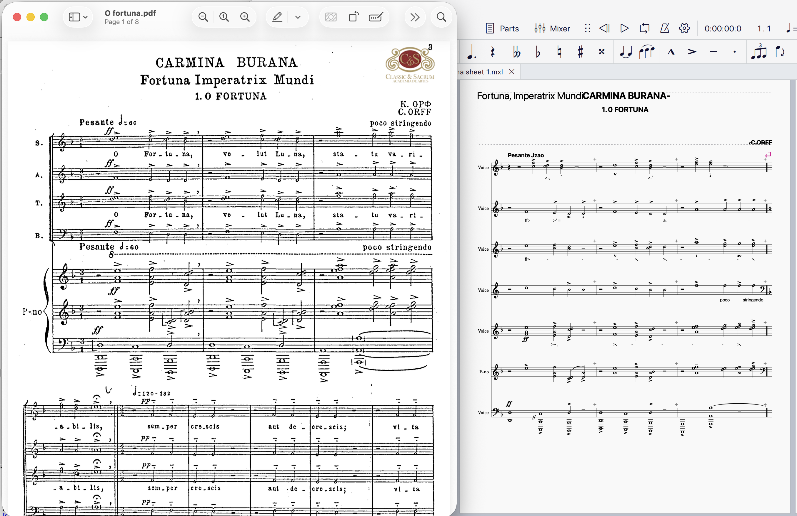
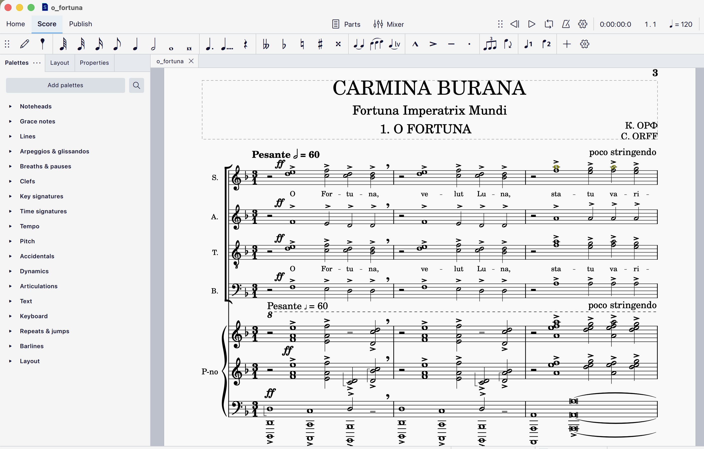

Link to the MuseScore 4 file: o_fortuna.mscz
Task:
For those who use Audiveris, discuss the aspects of your score that were not transcribed properly by the OMR engine.
For those who transcribe from scratch, discuss your experience transcribing the music. What aspects of MuseScore were intuitive and worked well? What aspects were challenging?
Reflection:
At first, I attempted to do OMR of the O Fortuna score in Audiveris. As can be seen in the screenshots below, the result was very disappointing: Audiveris failed to recognise voices, time signatures and even lyrics among the most obvious failures. Probably there was a way to attune the Audiveris settings to this particular image, but I decided that considering the complexity of the score (at least for my very basic knowledge of music theory and notation), it would be easier to transcribe from scratch than to try and catch all the mistakes made by Audiveris.
So, I reverted to the MuseScore option of the task, and actually have found using MuseScore quite an enjoyable experience. Sure, it requires a trial-and-error approach at the beginning, but I do not think that it is fundamentally more difficult than other specialised software, e.g. that of the Adobe family. I think all the challenges that I had were successfully resolved either by examining the MuseScore interface or by quick googling (Google AI responses are documented separately). Those challenges included:
The greatest challenge for me was adding 'Laissez Vibrer' signs. That is where I wished I could have asked a trained musician for some help. Gemini helped me to resolve that issue (I specifically asked what those signs can be in O Fortuna; see the AI use document), but I think MuseScore would benefit from an option of just drawing something and having it suggest some possible options (though maybe that is possible in the paid version?).
In general, I think that MuseScore provides great UI/UX, and if I had to use it for digitising manuscripts on a regular basis, I would be able to do that even with my initially limited musical knowledge (and I do find that I learned something about music notation through this exercise).

OMR result in Audiveris.

Audiveris result, opened in MuseScore 4, in comparison with the PDF I was digitising.

My manually transcribed score in MuseScore 4.